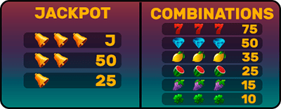

¿Cómo jugar?
Para jugar al tragamonedas, simplemente debes hacer girar los rodillos presionando el botón de "Jugar". Si los símbolos que aparecen en los rodillos coinciden, ganarás una cantidad de dinero determinada.
Nota: Puedes subir o bajar la apuesta antes de cada jugada
Reglas
- Sólo mayores de edad pueden jugar
- El objetivo del juego es hacer coincidir los símbolos en los rodillos para ganar dinero
- Las apuestas y los premios están sujetos a las reglas del juego y pueden variar según la máquina tragamonedas
Consejos
Algunos consejos para jugar al tragamonedas:
- Establece un presupuesto y no te excedas
- Juega en una máquina que tenga un porcentaje de pago alto
- Si no estás teniendo suerte, prueba en otra máquina